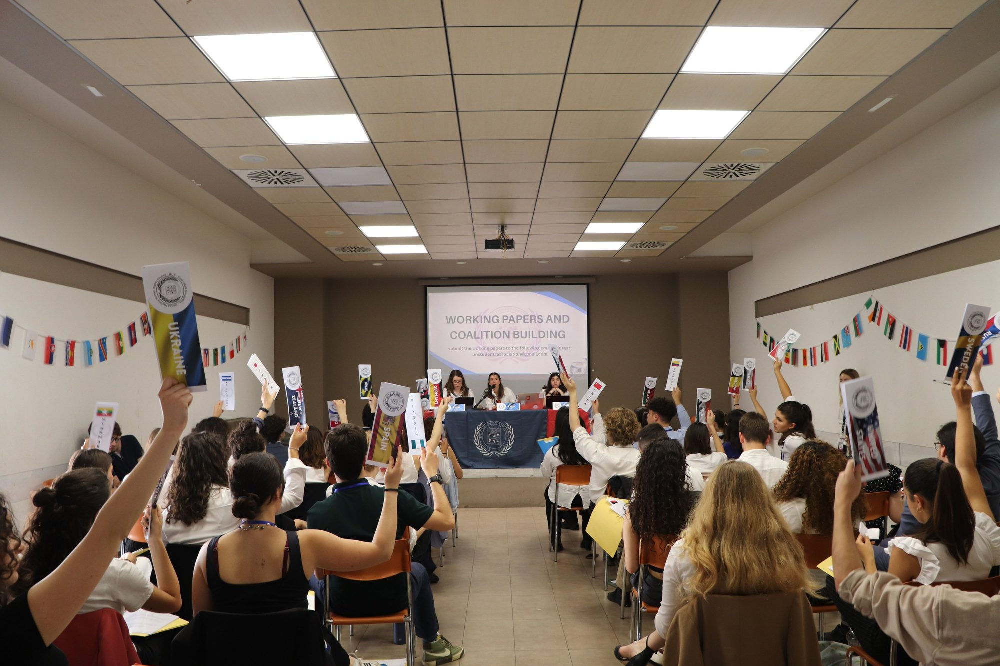

Who we are
An international student association bringing the United Nations experience to the Forlì Campus of the University of Bologna.
The association
UNSA is the United Nations Student Association of the University of Bologna, located in the Forlì Campus. We were founded in 2024 to bring high-quality academic extracurricular activities to students, regardless of their background, and to enrich their university journeys.
We organise Model United Nations conferences and preparatory meetings, panel discussions with guests and esteemed members of our faculty, debates, workshops and social gatherings that celebrate the multicultural nature of our student body.
Above all, UNSA is a platform for student engagement and empowerment: more than 50 volunteers work together to bring to life projects that bridge academic excellence and innovation.

Our mission
Written the way we know best — as a resolution.
On the mission of the Association
The United Nations Student Association,
Believing that informed discussions begin with the sharing of different ideas, perspectives and reflections,
Recognizing that every student, regardless of academic background and origin, deserves access to quality opportunities to grow,
Convinced that diversity and inclusion are the pillars of any community worthy of the name,
- Resolves to bring the Model United Nations experience to the student community of the Forlì Campus;
- Commits to promoting diversity and youth empowerment in all its activities;
- Undertakes to help students develop the hard and soft skills that enrich their journeys as global citizens;
- Decides to remain actively seized of the matter.
Our values
Diversity & Inclusion
Our pillars. Every voice matters, and no form of discrimination is tolerated.
Youth Empowerment
Students lead, speak up and take responsibility for real projects.
Accessibility
Open to all students, whatever their field of study or country of origin.
Critical Thinking
In a time of simplified narratives, we choose depth, nuance and research.
Our story so far
Two years, three conferences, one magazine — and a growing community.
- 2024
Foundation
UNSA is founded by students of the Forlì Campus.
- May 2025
First MUN Conference
The UN Human Rights Council on migration and climate change — followed by our first Gala Night.
- Sep 2025
Welcome Week & MUN Club
A week to welcome new students and the launch of our weekly MUN Club.
- Autumn 2025
Panel discussions
The United Nations at 80 and The Contested Middle East.
- Dec 2025
MUN Conference on AI
The General Assembly debates AI in military applications.
- Spring 2026
Women in Diplomacy
A seminar for International Women's Day and a panel with Orizzonti Politici.
- May 2026
MUN Conference 2026
The First Committee on weaponized economic interdependence.
- Jul 2026
The Critical Lens
The first volume of our student magazine, on the theme of war.